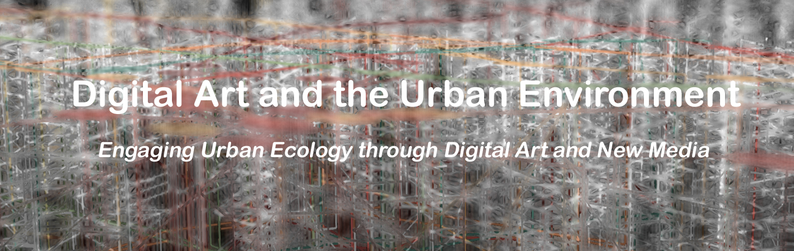

|
` |
|
|

Exhibition
Opening: October 4, 2013
Closing: October 25, 2013
M – Th : 12:00 PM – 5:00 PM
Syncronicity (2013)
Stanza
Syncronicity manipulates London real time bus and subway data to re-interpret the city fabric as an organic pattern based system. Synchronicity becomes a hybridized maze, a cellular and organic system pictured on the screen. In drawing all subway lines, each train is matched to one of the lines, its speed is estimated, and movement drawn as an animated colored circle. Five to six hundred trains are shown during the day, about sixty at night, and over one thousand buses are visualized in this integrated tube and bus map.
Stanza is an internationally recognized artist, who has been exhibiting worldwide since 1984. His artworks have won twenty international art prizes and art awards including: Vidalife 6.0 First Prize, SeNef Grand Prix, the Videobrasil First Prize, and have been included in over fifty exhibitions globally, including the Venice Biennale, Victoria Albert Museum, and Tate Britain, to name but a few. Educated in fine art at Goldsmiths College in the early eighties he later went on to study at Greenwich University and Central Saint Martins Art College London. He is a pioneer of net art and was one of the first to use internet art as a medium. His websites and net specific artworks have been online since 1995 and these online projects have reached an audience of over four million visitors. Recurring themes throughout his career include the urban landscape, surveillance culture, privacy and alienation in the city. The purpose of his work is to communicate feelings and emotions that we encounter daily which impact on our lives and which are outside our control.
Discovering Columbus Part I: Cities (2011)
Robert Ladislas Derr
City streets and parks are two components of the urban environment where different movements and activities are permitted. Discovering Columbus explores these spaces of our urban environment by blending the environments of ten towns in the United States named after Christopher Columbus. Acknowledging Christopher Columbus’ use of the stars for ocean navigation, Robert Ladislas Derr employs the constellation that appeared above each town on the night it was incorporated, in a quest of discovering the 15th century explorer. Constellations are transposed to the streets to provide Derr's route through each town. Recordings of vocalists from each town who sang Guy Mitchell’s Christopher Columbus are combined with footage layered from the ten towns to present a chimerical landscape. Viewing the footage of towns blending with one another, demonstrates that the towns have more in common than just a name. Wanderlust by nature, the iconic explorer was Derr's point of departure.
Robert Ladislas Derr is Associate Professor of Art at The Ohio State University. His exhibitions and performances of his work include the Mendel Art Gallery, Schirn Kunsthalle, Wexner Center for the Arts, and Irish Film Institute, to name a few. Among his awards are the Urbana Public Arts Commission, Lower Manhattan Cultural Council, and Ohio Arts Council. Lectures about his practice have been hosted by the University College Cork, Ireland; Taik - University of Art and Design Helsinki, Finland; and University of Rhode Island. Some of the collections holding his work include Loyola University Museum of Art, Miami-Dade Public Library, and Indiana University Art Museum. Derr received his MFA from the Rhode Island School of Design and BFA from the Art Academy of Cincinnati.
http://home1.arts.ohio-state.edu/derr34//
Slide Stories (2012)
Annette Weintraub
Slide Stories is a poetic exploration of the social and political construction of urban space. It is a meditation on the dominance of surface that has come to characterize an urban environment in transformation from historicized place to anonymous and generic global landscape. Through narratives, Slide Stories investigates the visual morphology of this urban environment in a series of movements through space in which the incremental accrual of visual incident links physical surroundings and psychological space. Slide Stories consists of seven sections—each with a different visual theme and underlying narrative. Brutalism explores issues of materiality and space; The Grid explores the geometries of familiar places and the patterning of urban space; Industrial Strength is a meditation on abandoned spaces; Nocturnal is concerned with the transformative effects of artificial light; Bricks explores visual repetition and the warmth of organic materials; Absence locates memory in the perception of negative space; and Blink is about transience and impermanence.
Annette Weintraub is Professor of Art and Director of The Robinson Center at The City College of New York, CUNY. Her work is an investigation of architecture as visual language and the symbolism of space. It integrates narrative elements within a variety of conceptual representations of space, examines the boundary between personal and public space, and the social meanings of landscape. Her projects have been shown at venues that include: College Art Association, FILE in Sao Paulo and Rio de Janeiro, The 5th Biennial of Media and Architecture in Graz Austria; The Whitney Biennial; The International Center for Photography/ICP; The International Film Festival Rotterdam; Thirteen/WNET TV’s Reel New York.Web; at SIGGRAPH and ISEA and numerous other national and international exhibitions. Commissions include The Rushlikon Centre for Global Dialogue, CEPA and Turbulence. Annette Weintraub’s work has been cited in many publications, including: Aperture, Art in America, Artforum, ArtByte, Newsweek, The New Yorker, New York Magazine, The Boston Globe and Leonardo.
http://www.annetteweintraub.com/
Uncultivated (2010 - present)
Lynn Cazabon
Uncultivated is an ongoing public art project consisting of geo-referenced photographs, a website (uncultivated.info), commercial displays, ‘plant walks’ open to the public, and exhibition prints representing wild plants within urban landscapes over time. Commonly known as ‘weeds,’ the project draws attention to tiny pockets of wildness within the urban environment and reflects upon how urban landscapes are evolving due to the effects of global climate change. Each printed image in the project is displayed with a QR code, which when scanned with a mobile device connects to its corresponding webpage containing detailed information on all the plants found in the image, their location, and the date it was taken. The public displays are designed to deepen awareness of the immediate surroundings of the viewer by displaying a photograph taken in close proximity. Started in Baltimore, MD in late 2010, the project has grown to other cities, including Chicago, IL, New Orleans, LA, Washington, D.C. and Brooklyn, NY
Lynn Cazabon is an artist who works in photography, web, mobile applications, video, and installation. Cazabon received her MFA from Cranbrook Academy of Art and undergraduate degrees from the University of Michigan (B.A., B.F.A.), and is currently Associate Professor of Art at University of Maryland, Baltimore County.
433m (2011 -present)
Xavier Leonard
433m is a (dis)Locative sound design. A geospatial audio portrait of a 433 meter span of public interiors/ exteriors in one place as mapped onto an analogous 433 meter span in a second place using Augmented Reality (AR) design methods. Installation audiences use headphones and AR browsers on smartphones or tablets to take a (dis)Located sound tour as they walk from site to site, experiencing a realtime audiovisual mashup of the two city spans. For the Digital Art and the Urban Environment edition of 433m, the sounds of a 433 meter span adjacent to the Pace Digital Gallery will be (dis)Located with an analogous span elsewhere in New York City. The second span will be chosen to articulate historical and cultural resonance between the two spans. The designer will identify the second span in consultation with gallery staff, historians and community members.
Xavier Leonard is a communications technology designer, researcher and activist. He was the founding director of Heads on Fire and the Heads on Fire Fab Lab. The program was selected as a national model in the U.S. for teaching technology in out-of-school settings. In 2010, he created Designers for Humanity, a model for delivering science, technology, engineering and mathematics (STEM) experiences through service-learning projects aimed at fostering innovation and providing an engineering solution for a specific community problem. Leonard has been honored as a Z-Fellow of the Zero Divide Foundation, an Ideas Institute Fellow of the MIT Media Lab, and a TEC Champion by the United States Congress. His design projects have been presented at the Institute of Contemporary Art, London; the Institute of Contemporary Art, Philadelphia; The Knitting Factory, NYC; the Soundwave Biennial, San Francisco, CA and the Open Knowledge Festival, Helsinki, Finland, among other venues. His work has been supported by the Western States Arts Federation; the Pennsylvania Council of the Arts; the Institute of International Education; the Pew Fellowship in the Arts and New American Radio. Leonard has spoken on the deployment of technology to empower and develop communities at the United Nationsʼ World Summit on the Information Society in Tunis, Tunisia; TEDx Americaʼs Finest City and other national and global events. A graduate of Columbia University, he has been a Media and Communications Specialist with San Diegoʼs Center on Policy Initiatives and a Senior Fellow in Emerging Technology at the SDSU Visualization Center
Website: www.XdotL.com
Blog: www.merelyanode.com